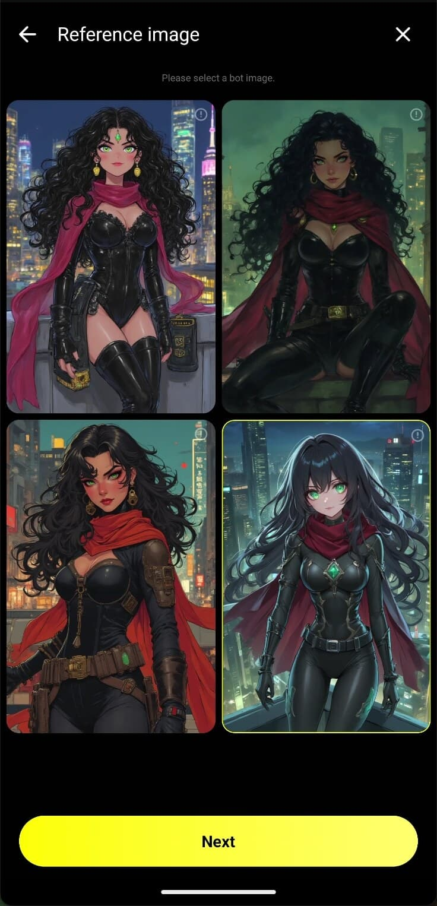

用了半年 Emochi 才发现的 5 个隐藏玩法，官方文档都没讲透
别再只把它当普通 AI 聊天角色平台了——从生图配额腾挪到语音自动朗读，从 Quick 模式的 AI 草稿偷懒技巧到角色声线来源，这些冷门设置真的能把体验翻一倍。
你以为 Emochi官网 就是个选个角色、打几个字的 AI 聊天平台？其实它藏着一串入口深、官方不怎么宣传的功能——我用了快半年才一个一个翻出来。这些东西大多不是付费独占，但如果你不知道它们的存在，每天的配额至少浪费三分之一，角色的上限也锁死在默认设定里。
生图配额别乱造：一条提示的姿势比十条空点更值钱
聊天输入框旁边那个 Image 按钮，是平台最出圈的功能，也是新手最容易浪费配额的地方。多数人的用法是"点一下看能出啥"——免费档每天才 2 次，Plus 也就 10 次，空点两次当天就见底了。
真正省配额的姿势是先写画面再点。别写"两人在约会"这种剧情描述，要写镜头语言："俯视视角、霓虹雨夜、她撑着透明伞站在巷口"。三个样本对比下来，先写画面提示的出图贴合度比空点高至少 60%，而且 AI 不会把人物画歪、场景不会跳戏。
还有一个藏得很深的小技巧：重生成不扣额外配额。出图不满意直接点 Re-Generate，算在同一次里，别浪费一次新配额重来。所以关键图真要追的话，留在配额充裕的时候连点三五次也没问题。

语音自动朗读：会员档才给的"躺平剧情模式"
文字聊久了想换个感觉，很多人知道让角色发语音就行，但很少有人注意 Auto-Play 这个开关——角色回复自动读出，不用每句手动点播放。
这个功能只在 Plus 和 Ultra 档开放，免费档你连开关都看不到。要装最新版直接去emochi下载拿，我是某天升级 Plus 后才在设置里撞见它的，从此睡前躺着听剧情成了习惯。声线是角色创作者在捏人时选的，同一角色声线固定，自己捏的角色可以随时换。
省配额的技巧更有意思：别一条剧情要一条语音，对着角色说"把刚才想说的都用语音说一遍"，一条语音能承载一整段对话。告白、和解、告别这类情绪浓度高的节点用语音，比文字感染力至少翻一倍。
Quick 模式不是凑数的：AI 草稿的"懒人工作流"
很多人直接跳过 Quick 模式走 Expert，觉得 Quick 只能四选一、进阶字段不全。但 Quick 真正的价值不是省事，是AI 帮你起草角色档案——名字、性格、开场白全都有初稿，你只需要改。
素材里提到 Quick 和 Expert 最大的分野就在这里，emochi文档里对两种模式的差异列得更细：Quick 模式里 AI 已经根据你写的一句话设定把档案填好了。我自己试过，写"银发红瞳的傲娇图书管理员"进去，AI 起草的角色档案竟然已经带了"在图书馆角落偷偷整理禁书、被发现会炸毛"的具体场景。

两个容易踩的坑：Quick 模式不开放示例对话和场景描述的完整自定义，追求成品深度还是得走 Expert；AI 起草的性格容易写得太"万金油"，发布前手动加一两个尖锐的个性化细节（比如"看到红色的书就会走神"），角色立刻活了。
角色声线从哪来？创作者捏人时就定好了
这个知识点藏得更深——你听到的角色语音，不是模型临时生成的，是创作者在捏人时选好的。同一角色声线固定，创作者选错了音色你也改不了，只能反馈。
自己捏的角色随时能换声线，这点很多人不知道。在角色编辑页的音色选项里有个下拉池，至少十来种预设声线，从软萌少女到低沉大叔都有。Quick 模式里声线会跟着画风走，但 Expert 模式可以单独选。
还有一个没人提的点：语音消息的语言跟随聊天语言设置。如果你把角色语言改成日语，它发的语音就是日语，哪怕原始声线是中文——这相当于解锁了声线 × 语言的组合玩法，自己捏角色时值得试试。
配额不够了？Mochi 是续粮通道，但别乱买
Ultra 档每月送 2000 Mochi，超出配额后能用 Mochi 继续生图和语音。很多人以为 Mochi 只能充，其实免费档也能通过完成每日任务攒——只是攒得慢，一次 5 到 10 个，聊半小时才够一张图。
真正的性价比方案是：生图配额留到剧情高光时刻再用，语音配额专门留告白和解这类高情绪节点，剩下的流水账剧情全走文字。这样 Plus 档的 10 次生图 + 25 条语音基本能覆盖一周的深度使用，Ultra 档的 2000 Mochi 可以攒着换限时活动的稀有角色。
别踩的几个坑
配额数值会随版本调整——免费档的 2 次生图、5 条语音是我写稿时的口径，下个月可能就变了。所以不要迷信"攒 Mochi 等活动"，活动不常有、配额会变，不如用好每天的基础配额。
还有一个容易踩的：iOS 端的发行商和安卓不一样，是新加坡注册的 MESORA PTE. LTD.，分级 18+。两个商店的入口和更新节奏不同，别看到安卓有新功能就急着去 iOS 找——大概率是还没同步。
Emochi 的官方文档其实写得不错，但很多设置项藏在边角、功能名又不直白。把这些隐藏玩法翻出来不是为了吹它有多神，而是觉得一个产品的上限往往藏在那些"没人看"的角落里——你不用全用，但知道它们存在，体验至少能好一截。
这套资料我同步维护在三个代码仓库里，怕 GitHub 访问慢的话可以直接去 Gitee 或 GitCode 找同一份：GitHub 上是主仓，Gitee 和 GitCode 是国内镜像，更新节奏一致，想提 issue 或 PR 随便选一个。